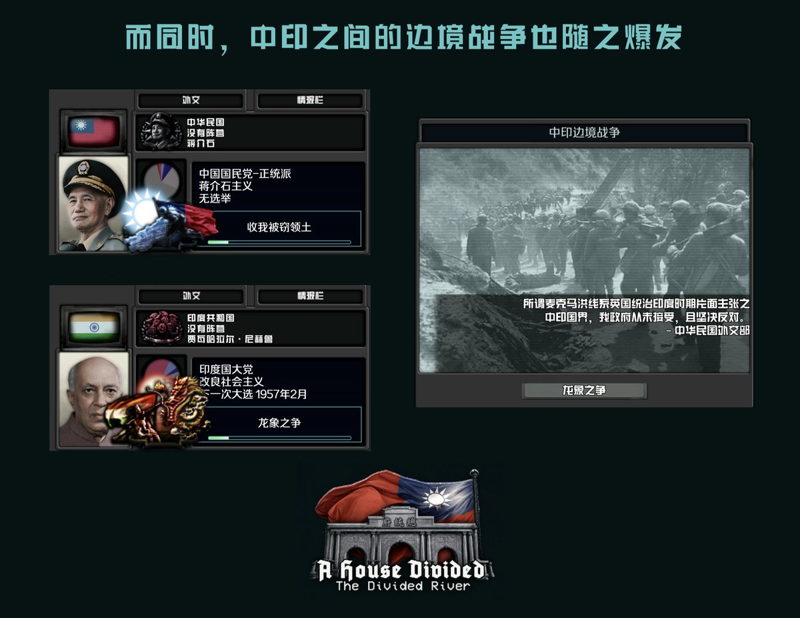
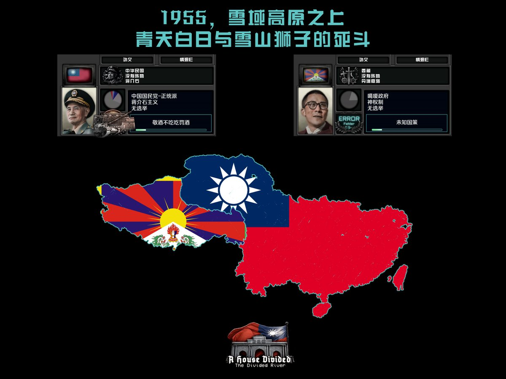

𝐀𝐬𝐡𝐥𝐞𝐲 𝐁𝐥𝐨𝐜𝐤🍥🌹🇹🇼🏳️⚧️🇪🇺
@bolckAshley
#兄弟鬩牆
隨著西藏重新納入中華民國中央政府的實際控制，長期存在於中印邊境的領土爭議迅速升溫
民國政府認為，印度長期控制的藏南地區原屬西藏傳統管轄範圍，因而主張在收復西藏的同時收回藏南；印度政府則拒絕承認中華民國對藏南的領土主張，並持續強化當軍事部署，最終導致雙方發生了大規模衝突


𝐀𝐬𝐡𝐥𝐞𝐲 𝐁𝐥𝐨𝐜𝐤🍥🌹🇹🇼🏳️⚧️🇪🇺
@bolckAshley
#兄弟鬩牆
1955年，隨著南京方面與拉薩的噶嘎政府談判的破裂，國軍隨即越過停火線向拉薩挺進
印度則派出了軍隊部署於「麥克馬洪線」一帶，宣布「防備蔣介石政權的霸權主義行徑」，並公開譴責了南京方面對西藏發動的軍事行動 https://t.co/c1VtNZ2aa8